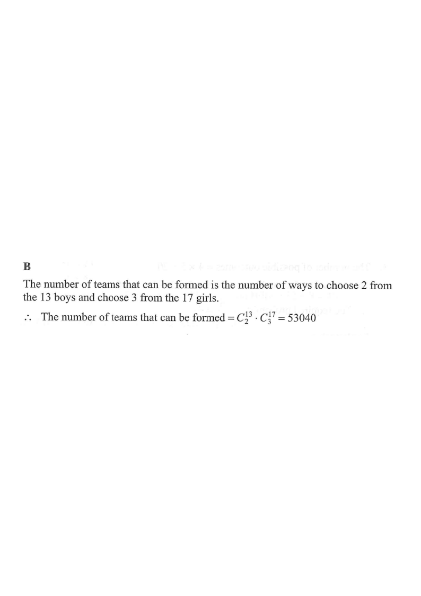

Question. There are 13 boys and 17 girls in a class. If a team of
2 boys and 3 girls is selected from the class to participate in a voluntary service,
how many different teams can be formed?
A. 38 896
B. 53 040
C. 142 506
D. 636 480

Figure (original exam diagram)
Step 1Identify the given information.
Class roster: $13$ boys and $17$ girls. We need a team with exactly
$2$ boys and $3$ girls.
A "team" is an unordered selection — order within the team does not matter.
Step 2Choose the boys.
The number of ways to choose $2$ boys from $13$ is
$$C_2^{13}={}^{13}C_{2}=\frac{13\times 12}{2}=78.$$
Use the combination formula $C_r^n=\dfrac{n!}{r!\,(n-r)!}$.
Step 3Choose the girls.
The number of ways to choose $3$ girls from $17$ is
$$C_3^{17}={}^{17}C_{3}=\frac{17\times 16\times 15}{3\times 2\times 1}=680.$$
Each choice of boys can be combined with any choice of girls.
Step 4Multiply (multiplication principle).
Total number of teams
$$=C_2^{13}\times C_3^{17}=78\times 680=53\,040.$$